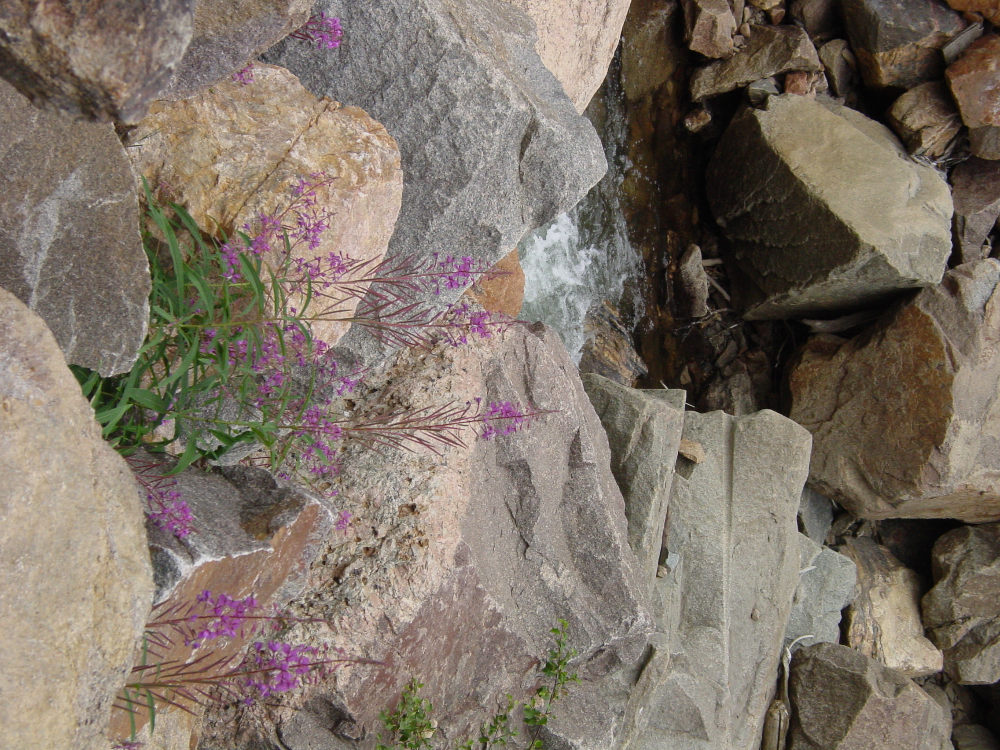

Achievement Goals

In this post, I’d like to build on the suggestion in my last post that the manner in which homework is presented can affect the way a student approaches completing the homework assignment. When a student undertakes a task, such as a homework assignment, there is something they hope to accomplish by completing it. The thing they hope to accomplish can be called an achievement goal. Achievement goal theory categorizes achievement goals, describes their origins, and explains their consequences. (Many good reviews on achievement goal theory are available, for example1 2.)
According to achievement goal theory, students may hold one of four achievement goal orientations. These are called performance approach, mastery approach, performance avoidance and mastery avoidance goal orientations. A student with a performance approach goal orientation wants to demonstrate their ability. In the context of solving homework problems in an engineering problem-solving course, I believe that this translates to a goal of getting the correct answer. In contrast, a student holding a mastery approach goal orientation wants to develop their ability. In terms of solving homework problems, I think of this goal as wanting to know how to get the correct answer.
A student holding a performance avoidance goal orientation approaches a task with the goal of not performing more poorly than others. In a problem-solving course this might translate to a goal of not getting the wrong answer. In my limited reading in the area, mastery avoidance goal orientations are not as well defined as the other orientaions. A mastery avoidance goal might be to avoid being unable to get the correct answer, but it also could mean completing a task to avoid losing the knowledge of how to get the correct answer.
The goal orientation that a student adopts has a direct impact upon the learning behaviors they exhibit. From a teaching perspective, it is desirable for students to adopt a mastery approach goal orientation. Students with a mastery approach goal orientation want to know what to do to solve a problem and they want to understand why they need to do it. Understanding why they perform a given sequence of steps to solve a problem is expected to lead to more persistent knowledge, and it is expected to be more easily transferrable to solving future problems.
Students who adopt a performace approach goal orientation may exhibit less desirable learning behaviors because their goal is focused upon the answer and not the path to the answer. For example, a student with a performance approach goal orientation may be more likely to employ a mimicry approach to problem solving. They find a solved problem that appears to be similar to the problem at hand and then mimick the approach used to solve that problem. If the goal is getting the correct answer, this is the most efficient route, short of copying. Over time as more and more problems are solved, these students will know how to solve the type of problem at hand. However, it is not an efficient approach to developing understanding.
Another undesirable learning behavior that can result from a performance approach goal orientation is not using feedback. Feedback is provided after the student has either demonstrated they can get the correct answer or failed to do so. In terms of their goal, reading comments on their work or comparing their solution to one that is correct won’t change their goal outcome. Similarly, students who adopt a performance avoidance goal orientation may compare their solution to a correct one, but in doing so, they are often looking for places where they can “get a few points back,” and not looking to understand what they did wrong.
So in this post I’ve described some relationships between a student’s achievement goal orientation and the learning behaviors they display. I noted that the achievement goal orientation they hold may affect how they approach doing their homework assignments. This was necessary before I can talk about how the manner in which homework is presented can affect their approach. That will be my next topic, but here’s a brief preview. In their courses, students perceive a course goal structure with the same four types of goals. The course environment, e. g. the way homework is presented, influences the goal structure they perceive which affects the goal orientation they adopt which impacts the learning behaviors they employ.
Footnotes
Bardach, Lisa, Sophie Oczlon, Jakob Pietschnig, and Marko Lüftenegger. “Has Achievement Goal Theory Been Right? A Meta-Analysis of the Relation between Goal Structures and Personal Achievement Goals.” Journal of Educational Psychology 112, no. 6 (2020): 1197–1220. https://doi.org/10.1037/edu0000419.↩︎
H. Alkharusi. “Literature Review on Achievement Goals and Classroom Goal Structure: Implications for Future Research.” Electronic Journal of Research in Educational Psychology 8, no. 3 (2010): 1362–86.↩︎